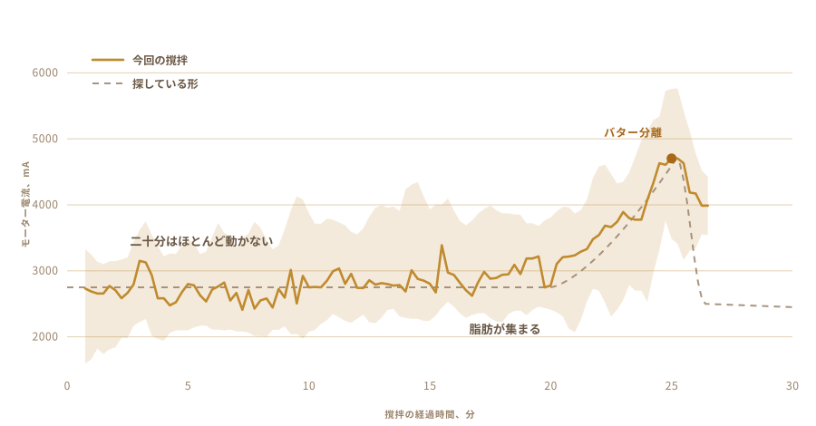

01
食べるだけで、作ったことはなかった
僕の知っているギーは村から来たものだ。何かの空き瓶に詰められて、ずっと同じやり方で作ってきた人たちの手から。あまりに長く同じなので、そこでは誰もそれを技術だとは思っていない。
店の缶に入っているものとは味が違う。
そして僕は一度も作ったことがなかった。牛乳をどれだけ置けばいいのか、ヨーグルトをどこまで冷やすのか、できあがった鍋がどんな音を立てるのか、何も知らなかった。
02
生クリームではなく、ヨーグルトから始まる
工業的に作るギーはたいてい生クリームから始まる。昔からのやり方は一日か二日早く始まる。生クリーム、といっても実際は煮詰めた全乳を、ヨーグルトに仕込んで一晩酸っぱくさせる。
この酸っぱくなる工程が肝心で、ここを飛ばすとできるのは澄ましバターだ。あれも悪くないけれど、ギーではない。

03
二日、台の上に置いておく
ぬるい牛乳に昨日のヨーグルトをひとさじ混ぜ込んで、あとは一晩そのままにして菌に働いてもらう。僕のは二日出しておいた。
これが発酵で、市販品が飛ばしているのはこの工程だ。生きた菌、主にラクトバチルス属の乳酸菌が乳糖を分解して乳酸に変えていく。牛乳は固くなる。酸っぱくなる。朝には別のものになっている。
いいところは全部ここから出てくる。乳糖が分解されるので体に入りやすい。脂肪とタンパク質も吸収されやすくなる。それに酪酸、腸の内側が実際に燃料にしている短鎖脂肪酸が、甘い生クリームから一気に作ったギーよりこのやり方のギーには多く入っている。
アーユルヴェーダがずっと前から処方してきたのは、まさにこのギーだ。
僕が言えるのは、あの香りは菌から来るということだ。そしてその香りが、こんな手間をかける理由のほとんどを占めている。

04
やり方には名前がある
ビローナ。ヨーグルトを鍋に入れ、木の撹拌ヘッドを沈めて、バターが音を上げて浮いてくるまで前後に動かし続ける。
撹拌ヘッドは自分で作った。ネットで見つかるものはどれも接着してあって、何の接着剤かを教えてくれるところはひとつもなかった。食べ物の中に三十分浸かるものだから、当てずっぽうで済ませる気にはならなかった。硬い木、ステンレスのねじ、それを引き出しにあった撹拌シャフトにボルトで留めた。
四本の腕と、それを直角に保つためのスチールバンド。全部ねじなので、またばらせる。


三十分くらいかかって、そのほとんどの時間、何も面白いことは起きない。つまり、何か別のものに押しつける空想をしたくなる類の作業だ。

05
だから聞いてみた
本当にやり方を知っている人たちはレシピで作らないし、そのうちの誰も僕の台所にはいなかった。だから質問はチャットの窓に入っていった。
どれくらい発酵させるか。ヨーグルトをどこまで冷やしておくか。摩擦で鍋が温まってバターが駄目になる前に、どこまで速く回せるか。答えが一つ出るたびに、次の問いが三つ開いた。
それから、本当に聞きたかったことを聞いた。これ、そっちでやってくれない？
問いは「どうやってギーを作るか」ではなくなった。「代わりに作ってもらえないか」になった。
06
ザ・ビースト
コードレスドリル一本。引き出しとホームセンターから出てきた撹拌ヘッド。電子部品はプラスチックの保存容器に、背骨の代わりにまな板、それと大きな黄色い停止ボタン。モーターがついているものには、これがあるべきだから。
ほとんど金はかかっていないし、見ればわかる。そしてそれがだいたい狙いでもある。

- モーターコードレスドリル、クランプで固定
- 撹拌ヘッド硬い木とステンレス、買わずに作った
- 頭脳Raspberry Pi、一秒に一回記録
- 感覚撹拌中はモーター電流、加熱中は温度プローブ
- 停止大きなボタン一つ、電源を切るように配線
07
回すのは簡単なほう
ヨーグルトを回すのは誰でもできる。難しいのは、いつ止めるかを知ることだ。
早く止めれば厚い泡が残る。長く回しすぎるとバターをバターミルクに打ち戻してしまって、消える。その頃合いは脂肪分と温度と、その日の調子で前後にずれる。
誰も時間で測らない。音を聞く。揺れる音がなめらかな渦から不均一な叩きつけに変わって、そこで手を入れる。

08
感覚は一つ、一つだけ
だから感覚を一つだけ持たせた。モーターがどれくらい強く引いているかを見ている。
二十分は何も起きない。負荷は 2700 mA のあたりにいて、ふらふらしている。それから脂肪が集まり始めて、ドリルはもっと硬いものを押すことになる。4700 まで上がってそこで少し止まり、それからバターが液体から離れて負荷が落ちる。乳化が壊れる瞬間で、乳業ではこれを転相と言う。
カメラもモデルも、賢いものは何も入っていない。上がって、それから落ちる数字が一つ。

09
自分で止まった
回っていた。僕は別のことをしていて、戻ってきたら勝手に切れていた。
薄い黄色のバター粒が、濁ったバターミルクに浮かんでいた。誰も時間を教えていない。感じ取れる唯一のものから、それを割り出した。

10
そこからまた手作業
バター粒を集めて、押して玉にする。冷水で、水が濁らなくなるまで何度も何度もすすぐ。
残したバターミルクの一滴一滴が、次の工程で焦げる。ここは自動化しなかったし、したくもなかった。


11
二つめの感覚
モーターの負荷は、いつ止まればいいかを装置に教えた。加熱は別の問題だ。今度は一瞬を探すのではなく、一つの状態を保とうとしているから。
だから鍋は温度プローブを入れた電熱プレートに乗せる。プレートを入れたり切ったりして数字を置いたところに保つ、交流の電力調整器もつける。250 F に設定したら、一時間くらいそこにいた。摂氏なら121度あたりだ。
一時間鍋を見ている人間は、どこかで気がそれる。調整器は退屈しない。

12
一時間、色を見ている
バターを鍋に入れたら、あとはだいたい勝手に進む。
溶ける。白く、うるさく泡立つ。水分が飛んで音が消えていく。乳固形分が沈んで茶色くなり、香りがバターから焼けたものに変わる。鍋が静かになって液体が澄んだら、できあがりだ。
それでもほとんど見ていた。見ていて気持ちのいいものだから。でも僕がしたことは、出来上がりを何も変えていない。


13
ギー
澄んでいて、琥珀色で、子どものころから食べていた瓶と同じ匂いがする。僕が持っていた試験はそれだけで、それには合格した。

温かくて澄んだまま瓶に入れた。翌日には薄い色でざらついて固まっていた。
ラベルを貼った。書いてある言葉はネパール語のギーで、隣のコードを読むとこのページに戻ってくる。

生まれて初めて作った分だ。本当に作ったとは言えないけれど。
14
二回目は九つの瓶
一回目は二つの瓶でそれが全部だった。今回は手すりが埋まった。
九つ。カメラにいちばん近いのが背の高いねじ蓋の二つ、真ん中を通るのがクリップ蓋の六つ、いちばん奥の柱のところに小さいのが一つ。

ラベルは今は違う。最初の二つはピンクの紙で、上に OUR STORY と印刷されていた。こっちは透明なフィルムなので、文字の後ろからギーが透けて見える。隣のコードは今もこのページに戻してくれる。


一回目と同じ薄い黄色に固まった。そうなるかどうかは自信がなかった。
15
次にやりたいこと
今この機械が知っていることは二つ。いつ撹拌をやめるか、どの温度を保つか。
次は目と耳をつけたい。カメラがあれば、泡が引くのと固形分が茶色くなるのを自分で見て、僕が渡した数字を守る代わりに自分で火加減を決められる。それとマイク。ギーができたかどうかを教えてくれるものの多くは、鍋が静かになることだから。
ドリルはもう一仕事できそうな気もする。バターが鍋に入ったら混ぜてやる必要があって、すぐそこに何もしていないモーターが一つある。
それからループ。発酵の時間を変える、速さを変える、出てきたものを味見する、うまくいったものを残す、また回す。三十回やれば、僕が探そうと思いもしなかったところに落ち着くだろう。
そもそも、どこを探せばいいのか最初からわかっていなかった。
何でできているか、どこで測っているか、この装置が実際に何を見ているか。